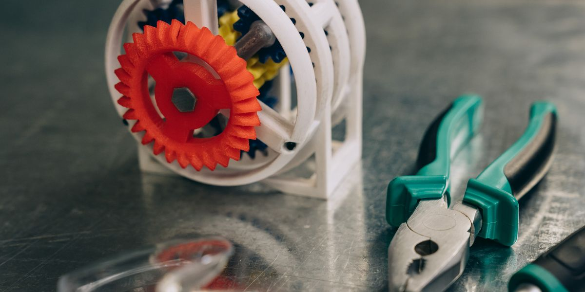
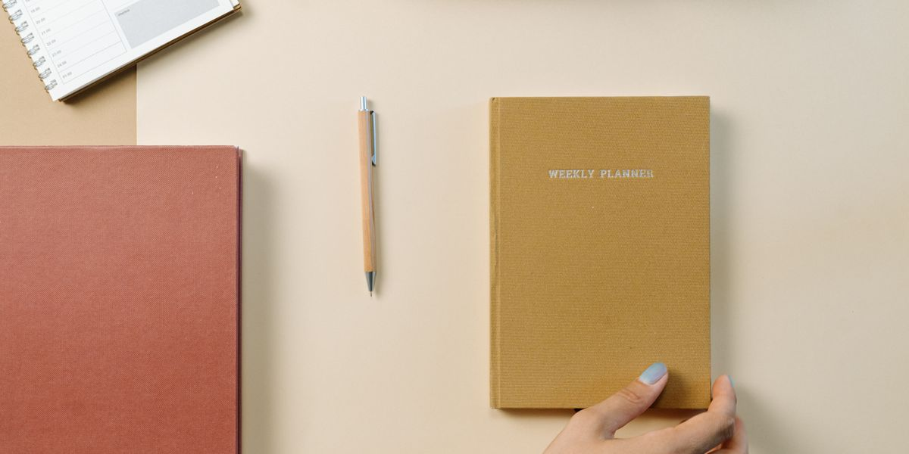
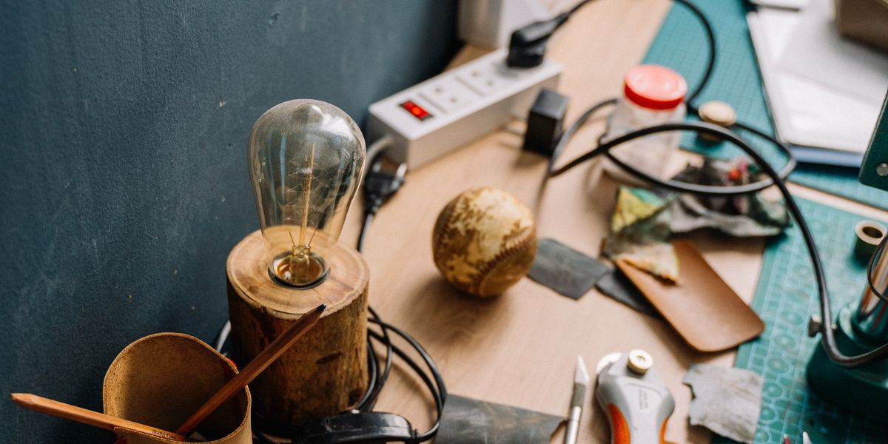

A portfolio in four chapters
Thomas Peter’s Portfolio!
An engineering mindset.
A creative streak.
A story worth exploring.
Meet Thomas Peters, an NJIT freshman in 2026 with an interest in mechanical engineering technology and video games.
Begin the adventure
Scroll to explore. Take any chapter at your own pace.

01 / The beginning
Every adventure starts with curiosity.
For Thomas, that means exploring how things work. As an NJIT freshman in 2026, he wants to become an expert in mechanical engineering technology.
There is also room for play: video games are part of the story, too.
About Me — explore my background02 / The playground
Where play meets problem solving.
Centurion Showdown brings those interests together in a damage calculator. Enter attack and defense stats, choose elements, and explore the result.
Visit the Projects page for the calculator and the spaces reserved for future projects.
Projects — see what I have created Try the calculator
03 / The toolkit
More than a single kind of strength.
Creative thinking, fast calculations, and hands-on ability are part of Thomas’s toolkit. Supportiveness, empathy, and resilience matter just as much.
Skills — learn what I can do04 / The next hello
The next chapter starts with a conversation.
You have met the person, explored a project, and opened the toolkit. Come say hello by email or find Thomas on Discord.
Contact — come find me here Thomas90827@gmail.comAdventure complete. Curiosity continues.
Pick a path. Keep exploring.
Use the navigation to take a closer look, or return to the beginning.
Back to the start ↑